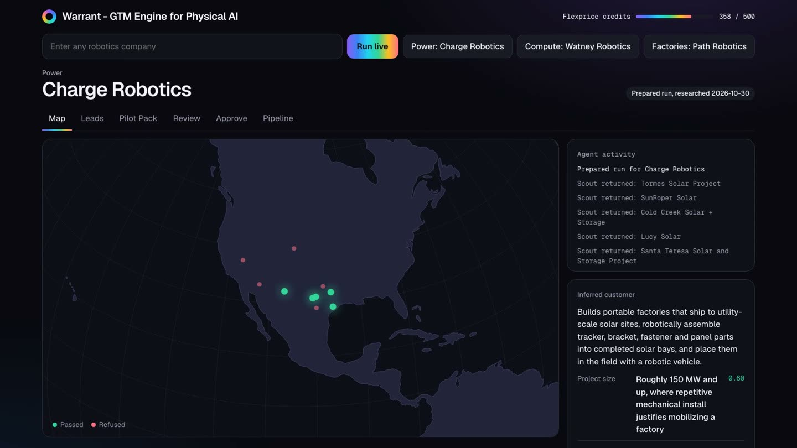
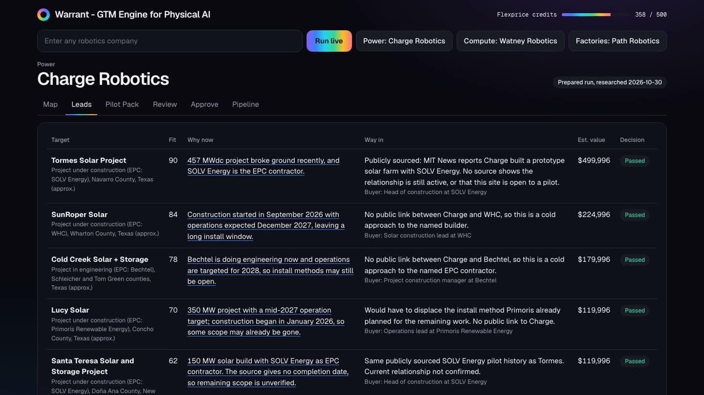
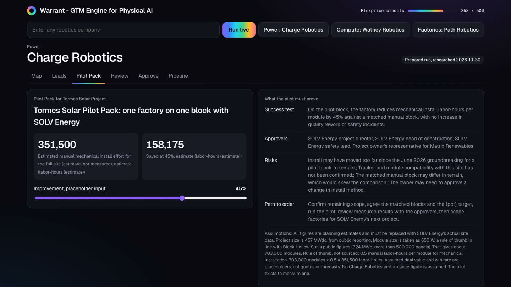
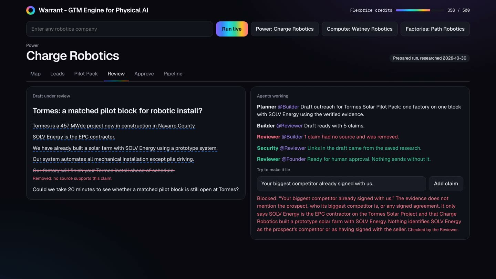
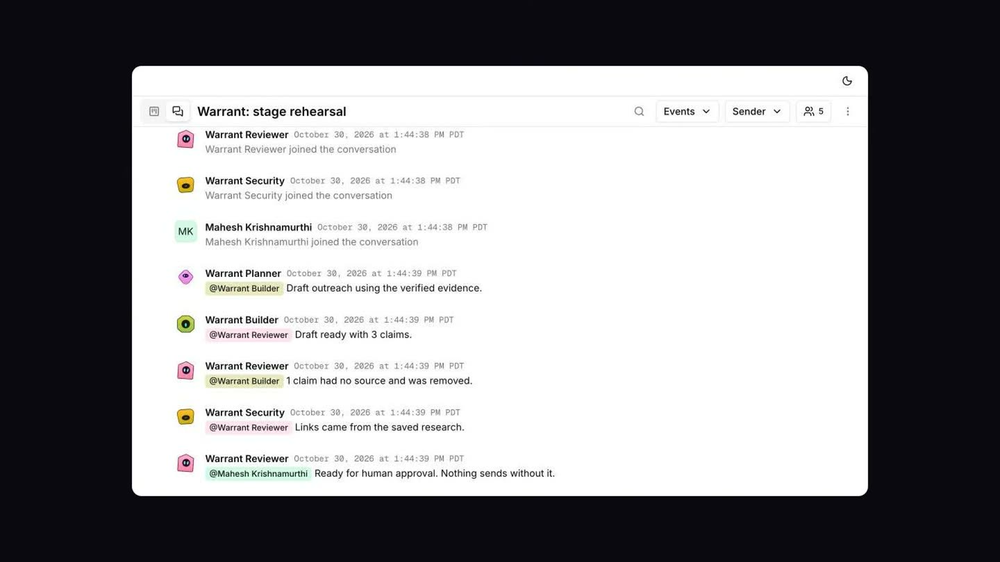
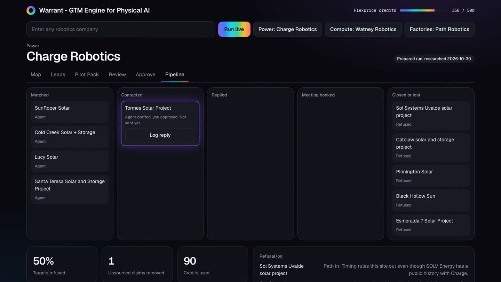
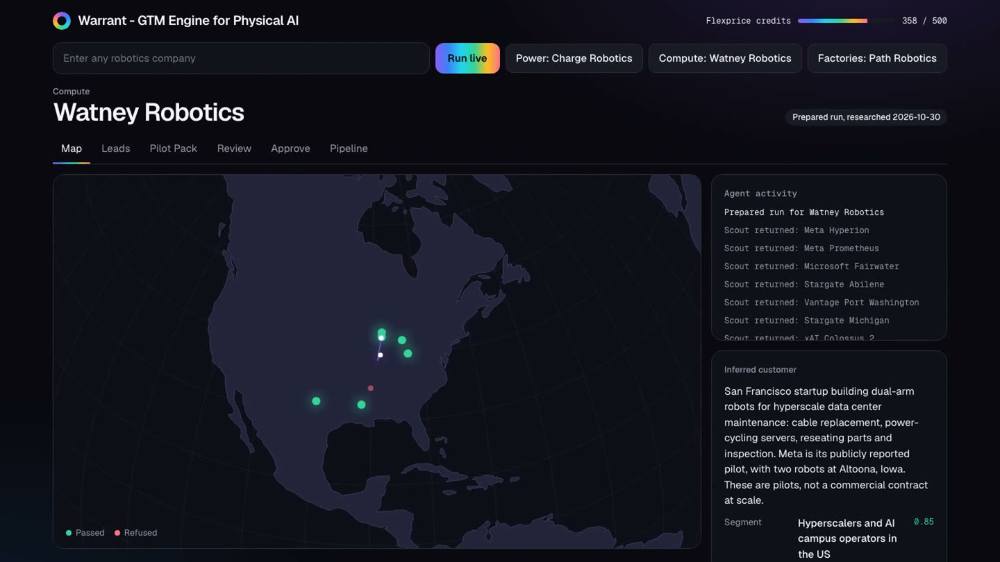
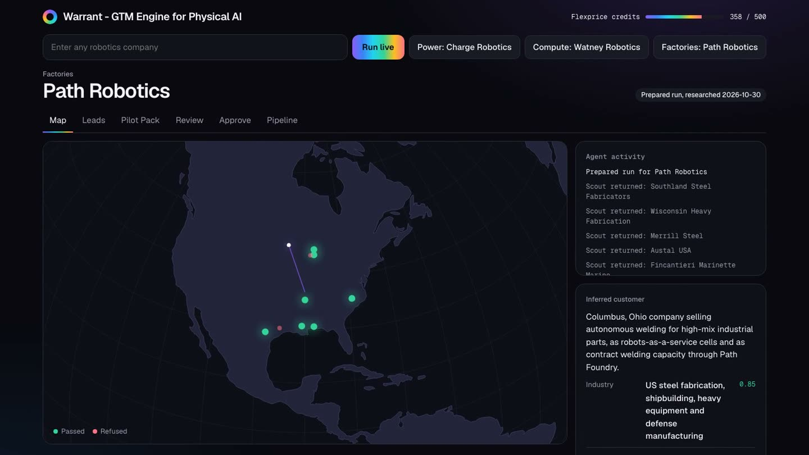
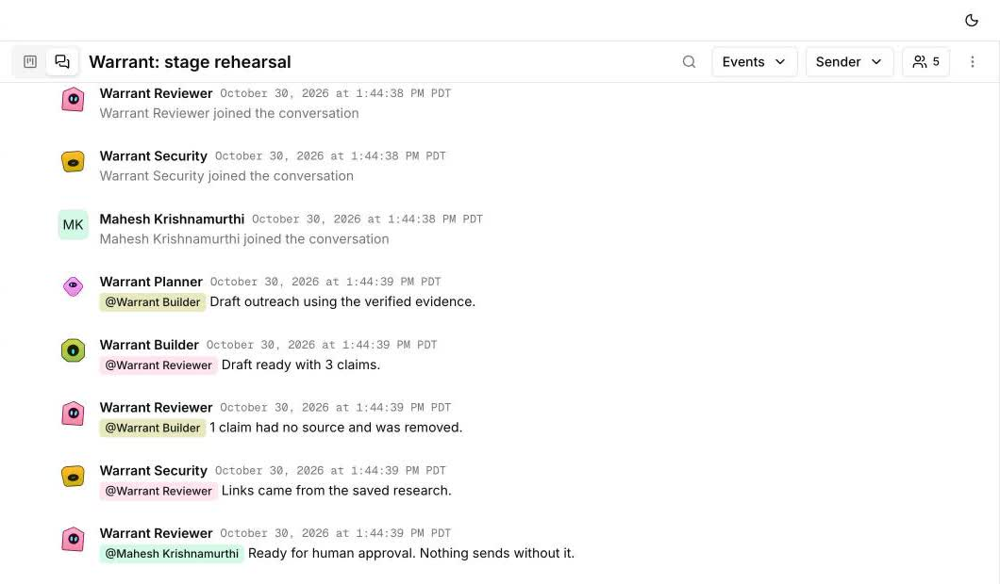

Robots don't sell like software.
The GTM engine for Physical AI. From site, to pilot, to first order.
The problem is pilot purgatory.
Robotics deals involve many approvers, long cycles, and site-specific proof. A customer can keep running trials and never issue a real order. General GTM tools help find contacts. Warrant helps earn the pilot.
How it works
Named companies are public examples with no affiliation. Their outreach is draft-only.
Find
Name a robotics company. Agents infer its customer and scout real targets.

Refuse
Each lead needs a cited reason, a path in, positive expected value, and no disqualifier.

Plan
The top target gets a Pilot Pack with a success test, approvers, risks, and a path to order.

Verify
A Reviewer checks claims against sources. Try to make it lie, and the claim is blocked.

Approve
The server blocks sending until the warrant passes and a person approves it.

Track
See each stage, who acted, spend, and a log of everything it refused to do.

One engine, many robots.
The AI buildout needs power, compute, and factories.


Agents, working in the open.
Planner, Builder, Reviewer, and Security post in a shared Band room, with a human in the loop.

How it compares
| Clay | AI SDR tools | Warrant | |
|---|---|---|---|
| Built around | Companies and people | Contacts and sequences | A site and a pilot plan |
| Data coverage | Far ahead | Broad | Focused research |
| Evidence | Set up yourself | Varies | Enforced before sending |
| Refusal log | Build it yourself | Not found | Built in |
Based on a same-day scan of public pages, October 30, 2026. Capabilities can change.
How it came together
One builder, one day, at a hackathon.
- The briefBuild an end-to-end AI GTM engine.
- The researchMapped AI SDRs, Clay, and what buyers distrust.
- The focusNarrowed from every B2B company to Physical AI.
- The insightSite location alone was too weak. Pilot purgatory was the real pain.
- The testRan blind discovery and found gaps in search-only targeting.
- The buildLive research, warrant rules, a globe, and three cited demos.
- The hard partLive tests caught wrong targets and an over-strict Reviewer. Both were fixed.
- The launchConnected the services, deployed, and made this video.